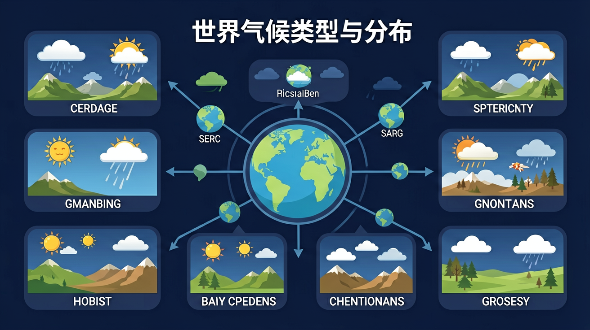

阅读世界气候类型分布图，描述世界主要气候类型的分布特征；结合实例，说明纬度位置、海陆分布、地形等对气候的影响。

🎯 能说出12种气候类型的名称及典型分布区
🎯 能根据气温曲线和降水柱状图判断气候类型
🎯 能分析气候类型与自然景观的对应关系
❓ 为什么地中海气候夏天反而干燥？
❓ 热带雨林气候和热带季风气候到底有啥区别？
❓ 为啥我们这儿冬天冷，赤道却全年都热？
学完这一课，这些问题你都能自信地回答。
下列哪项是地中海气候最典型特征？
热带沙漠气候主要分布在？
世界气候类型与分布是初中地理的重要内容。阅读世界气候类型分布图，描述世界主要气候类型的分布特征；结合实例，说明纬度位置、海陆分布、地形等对气候的影响。
结合实例，说明天气和气候对人们生产生活的影响。
点击时代/图层按钮切换地图；悬停边界，点击城市标记查看说明。
世界主要气候类型受纬度、海陆、地形、洋流等因素影响，呈一定分布规律：如赤道附近多热带雨林气候，两极附近为寒带气候，中纬度大陆东岸常见季风气候。学习要“名称—特征—分布—成因”四合一。
先按热量带抓大类，再区分大陆东岸/西岸差异。读图定位比死背地名更有效。
常见误区：常见误区是只记名称不记分布规律，或把天气现象当成气候类型。
热带雨林气候主要分布在？
1. 国际物流航线规划：马士基航运公司优化亚欧航线时，必须考虑北印度洋季风气候。每年6-9月西南季风期间，货轮会选择绕行阿拉伯海南部避开暴风区，这使新加坡至汉堡航线增加3天航程但确保安全，正是应用了季风气候降水集中、风力强劲的特征知识。
2. 冬奥会选址评估：北京2022年冬奥组委考察张家口赛区时，发现其位于N41°的温带季风气候区，但海拔1800米的崇礼1月均温-12℃，比同纬度纽约（-0.6℃）低11.4℃，这正是地形抬升导致气温垂直递减的典型例证，最终使其成为理想雪上项目举办地。
3. 光伏发电站建设：迪拜Mohammed bin Rashid太阳能公园选址24°N的沙漠气候区，工程师利用该地年日照超3500小时、降水不足100mm的特征，设计倾斜22°的光伏板角度以最大化接收太阳辐射，年发电量达500万兆瓦时，相当于减少120万吨碳排放。
1. 为什么南美洲西岸的热带沙漠气候（如阿塔卡马沙漠）能向南延伸到18°S，而非洲西岸的纳米布沙漠只到25°S？思考线索：对比两大陆西岸洋流性质——秘鲁寒流比本格拉寒流更强；注意安第斯山脉对东南信风的阻挡作用；查看南美大陆在该纬度的轮廓特征。
2. 若青藏高原被削平到1000米海拔，东亚气候会发生什么变化？分析角度：首先考虑冬季风路径是否改变；其次推算高原热泵效应消失对夏季风水汽输送的影响；最后思考长江中下游"梅雨"的持续时间可能如何变化——目前上海6-7月降水量占全年28%。
当我们打开世界气候分布图，首先注意到赤道两侧醒目的深绿色区域——这是年降水量超2000mm的热带雨林气候，刚果盆地和亚马逊平原的参天大树正依赖这种终年高温多雨的环境。向北移动，在10°-20°之间出现草原景观，这里的萨赫勒地区年降水量骤降至400-800mm，形成明显的干湿季交替，斑马迁徙的节奏正与热带草原气候的雨季同步。继续往北，神秘撒哈拉沙漠提醒我们关注23°-30°间的副热带高压带，开罗年降水仅25mm却蒸发量高达2000mm，这种极度干旱的成因要从行星风系三圈环流找答案。转向大陆东岸，上海与纽约同处北纬31°和40°却气候迥异，前者夏季受东南季风影响降水集中（6月降水185mm），后者全年受西风带控制均匀降水，这揭示了海陆热力性质差异如何重塑气候分布。最后观察安第斯山脉西坡，从热带雨林到高山苔原的垂直变化，验证了海拔每升高1000米气温下降6℃的规律，的的喀喀湖（3812米）畔的印第安人至今穿着羊驼毛衣抵御10℃的全年均温。气候类型分布看似复杂，实则是纬度位置、大气环流、海陆分布和地形因素共同作用的结果谱写的自然交响曲。
1. 错误表现：认为热带雨林气候只分布在赤道附近。许多学生会忽略海拔因素，看到赤道附近的乞力马扎罗山（3°S）存在积雪就产生困惑。认知根源在于把纬度位置当作唯一影响因素，忽略了地形对气温的垂直递减作用（每升高1000米降温6℃）。正确理解是：热带雨林气候确实集中分布在赤道两侧10°范围内，但在高耸山地会出现垂直气候带，如厄瓜多尔安第斯山脉海拔2800米以上就属于高山气候。
2. 错误表现：将地中海气候与温带海洋性气候混淆。学生常因二者都分布在30°-40°大陆西岸而弄混，比如误以为洛杉矶（34°N）冬季多雨是温带海洋性气候。认知根源在于未掌握降水季节差异的关键特征。正确理解是：地中海气候夏季干燥（如罗马7月降水仅15mm）、冬季温和多雨，而温带海洋性气候全年降水均匀（伦敦各月降水均在50mm左右）。
3. 错误表现：认为所有内陆地区都是温带大陆性气候。学生看到乌鲁木齐（44°N）年均温7.8℃就简单归类，却忽略了中亚沙漠的极端性。认知根源在于未理解海陆位置对气候极端性的放大作用。正确理解是：同纬度内陆地区，距海越远气温年较差越大，如乌兰巴托（48°N）年较差高达40℃，而大连（39°N）仅28℃。
复制提示词到 AI 学伴，生成「世界气候类型与分布」的示意图或结构提纲；也可以上传你手绘的示意图，请 AI 学伴点评。
复制后可粘贴到 AI 学伴继续对话。
关于温带海洋性气候的正确叙述是
给出罗马、上海、开普敦三地的气候数据
关于世界气候类型与分布的学习，哪种做法最科学？
选一个并查看反馈。
先独立作答，再点选项查看对错与错因。
下列四幅气温曲线与降水量柱状图中，能反映地中海气候特征的是
导致撒哈拉沙漠与亚马孙平原气候差异的主要因素是
下列城市气候类型组合正确的是
热带草原气候的典型植被是____，其降水具有明显的____两季之分
答案：热带稀树草原,干湿
草原景观适应旱雨季交替
亚欧大陆东岸从低纬到高纬依次分布着____气候、____气候和____气候
答案：热带季风,亚热带季风,温带季风
季风气候的纬度变化规律
✅ 南北纬40°-60°大陆西岸均有分布，如北美、智利
💡 教材案例地域局限
✅ 热带地区无四季之分，只有干湿两季
💡 用温带经验理解热带
口诀：热带雨林赤道边，草原两侧紧相连；季风亚洲东南部，沙漠回归大陆间
类比：气候像人的性格：热带雨林是急性子（全年活跃），地中海气候是双面人（夏干冬湿）
（中考真题）右图气候资料对应的城市可能是？ [附罗马气温降水图]
（迁移题）若某地7月均温-5℃，年降水200mm，最可能是？
（综合题）秘鲁西海岸沙漠形成的主因是？
点击节点跳转到对应章节；可切换布局。